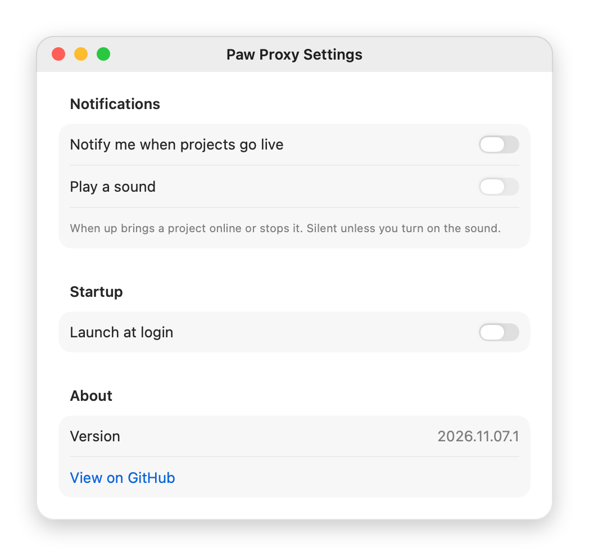
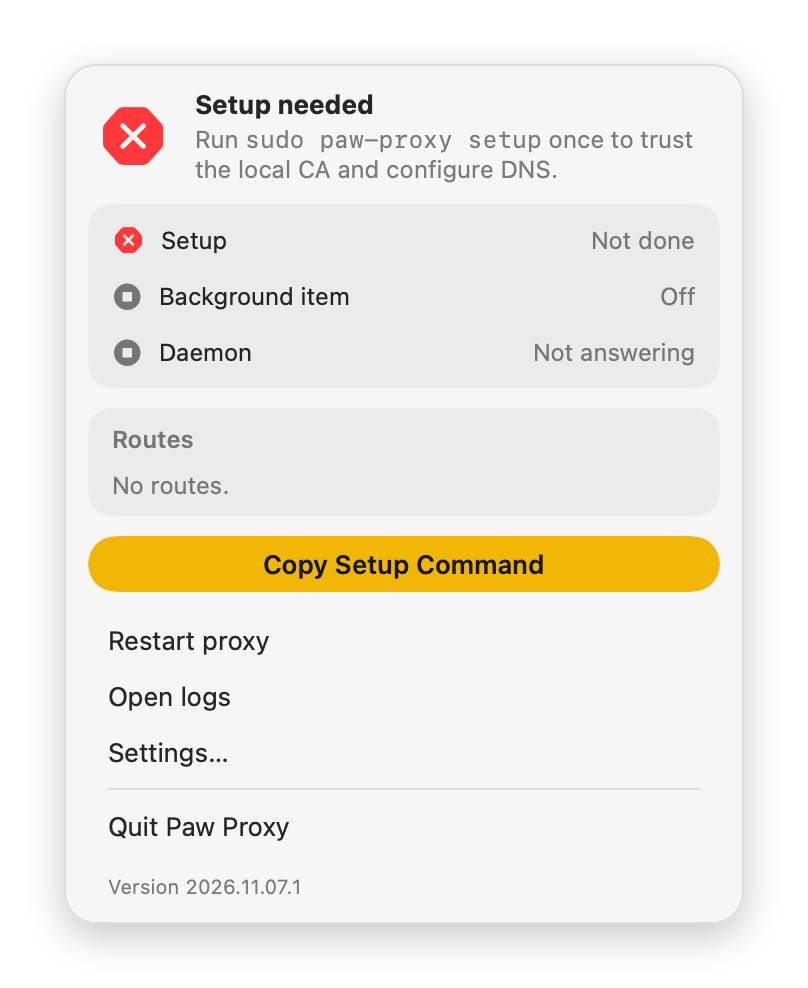

Run your dev server with up
Keep your usual command and put up in front of it. It finds a free port, hands it to your server as PORT, and registers a name with the paw-proxy daemon:
Open https://myapp.test in any browser. The name comes from package.json, or the folder name when there is none; up -n api bun dev picks your own. Stop the server and the route goes away. up works with anything that reads PORT: npm run dev, yarn dev, next dev, rails server.
How myapp.test gets HTTPS
- A local DNS server answers every
*.testname with 127.0.0.1. - The proxy on port 443 asks a local certificate authority, trusted in your keychain during setup, for a certificate for that name. It is made on the first request.
- The request goes to the port
upregistered. WebSockets pass through, so hot reload keeps working.
up also sets APP_URL, APP_DOMAIN, HTTPS=true and NODE_EXTRA_CA_CERTS, so OAuth callbacks and server-side fetches can use the real address.
Worktrees and Docker Compose
When a second checkout of the same project asks for a name already in use, up falls back to the folder name, so ~/code/myapp-feat-auth becomes myapp-feat-auth.test. Wrap docker compose up and every service with a published port gets its own name:
On your phone
.test names stop at your Mac. Add --tailnet and up also serves the project to your other devices over Tailscale, with a certificate they already trust:
The port comes from the project's name, so the address stays the same every time. Only your tailnet can reach it, and the address goes away when up stops. Without Tailscale, up says why and carries on with .test.
From the terminal
- paw-proxy status
- Whether the daemon runs, and every route with its upstream.
- paw-proxy logs -f
- Follows requests as they arrive.
- paw-proxy doctor
- Checks DNS and the HTTPS handshake on every address a .test name resolves to.
- paw-proxy restart
- Restarts the daemon, for example after an upgrade.
What the panel tells you
The header says whether the proxy is running and how many routes it holds. When something needs you, it says what, and the paw in the menu bar carries a badge until it is fixed.
Under it, three rows cover the moving parts: setup (the local CA and DNS), the background item macOS has to allow, and the daemon with its version and uptime. Green is fine, yellow waits on you, red is broken.
Routes lists every name with the port it forwards to and the project folder. Click one to open it in your browser; a route started with --tailnet says so, and its menu copies the tailnet address. A greyed-out route has not had a heartbeat from up for a while and will expire if it stays quiet.
Settings

Notifications are off until you turn on Notify me when projects go live; macOS asks for permission then. They come from Paw Proxy itself when up brings a project online or stops it, stay silent unless you also turn on Play a sound, and clicking one opens the project. Launch at login keeps the paw in the menu bar after a restart.
Install
- Install the app and both commands with Homebrew:
brew install --cask alexcatdad/tap/paw-proxy - Run setup once:
sudo paw-proxy setup. It creates the local CA and trusts it, adds the.testresolver and hands the daemon to Paw Proxy. Restart your browser afterwards so it sees the new CA. - Open Paw Proxy. If macOS asks, allow it under System Settings › General › Login Items; the panel says when that is needed.

Requires macOS 13 or later on Apple silicon. Upgrade with brew upgrade --cask paw-proxy; the panel offers Restart to finish update until the daemon runs the new version. Firefox keeps its own certificate store: brew install nss, then run setup again.
To remove everything: sudo paw-proxy uninstall, then brew uninstall --cask paw-proxy.
What it never does
- Listen beyond your Mac unless you ask. The proxy, DNS server and API stay on loopback or a private socket, and routes can only point at localhost. Only
up --tailnetshares a project, and only with your own tailnet, never the public internet. - Share the CA's private key. It stays readable only by you in
~/Library/Application Support/paw-proxy/and is never logged or exported. - Ask for your password outside setup and uninstall, the only steps that need
sudo. - Send telemetry, analytics or update checks over the network.
- Notify you unless you turned notifications on.